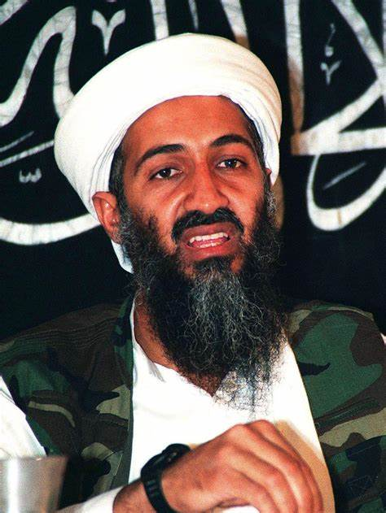

|  | |
| Nama | Osama Bin Laden |
| Tanggal lahir | 10 Maret 1957 |
| Tempat lahir | Riyadh, Saudi Arabia |
| Pekerjaan | Pekerja ronda |
Usamah bin Muhammad bin Awwad bin Ladin[a] (10 Maret 1957 – 2 Mei 2011) adalah seorang teroris asal Arab Saudi, sekaligus pendiri jaringan teroris terbesar internasional Al Qaeda, yang bertanggung jawab atas peristiwa 11 September 2001.
Dilahirkan di Riyadh, Arab Saudi, kawasan pantai Laut Merah. Usamah adalah anak ke-17 dari 52 bersaudara. Ayahnya yang bernama Muhammad bin Ladin, adalah seorang petani dari Yaman yang kemudian bermigrasi ke Arab Saudi setelah Perang Dunia II). Di tempat yang baru ini Muhammad bin Ladin memulai dengan usahanya sebagai kontraktor. Pada akhirnya ia memenangkan banyak kontrak bagi pembangunan masjid-masjid dan istana-istana yang sangat bernilai dari pemerintah Arab Saudi. Oleh karena itu ia telah mengembangkan tali persahabatan yang sangat akrab dengan keluarga Kerajaan Saudi.[1] Muhammad bin Ladin kemudian telah menjadi salah seorang yang paling kaya di Arab Saudi, yang diperkirakan memiliki keuntungan miliaran dolar Amerika Serikat. Dari keuntungannya ini diperkirakan Muhammad bin Ladin memiliki saham sebesar hampir 300 miliar dolar Amerika.
List Terroris